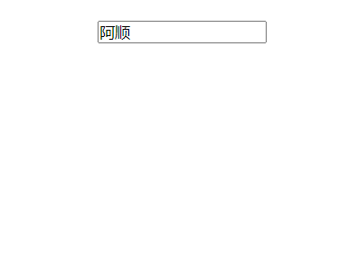
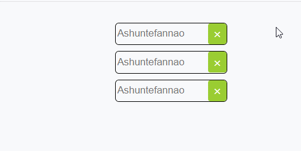

Set new Set([item1,item2,…])用于存储任何类型的唯一值 ，无论是基本类型还是对象引用。
以数组的形式，传入各个参数。使用[]包裹。
只能保存值没有键名
严格类型检测===：如字符串数字不等于数值型数字
值是唯一 的，不重复的。
遍历顺序是添加的顺序，方便保存回调函数
基本使用 特性的体现
没有键名，通过迭代，keys、entries，返回的键值就是value值
1 2 3 4 let set = new Set([1, "1", 1]); console.log(set.keys()); //SetIterator {1, "1"} console.log(set.values()); //SetIterator {1, "1"} console.log(set.entries()); //SetIterator {1 => 1, "1" => "1"}
值是唯一的，会自动剔除重复元素。判断重复的标准：是否严格类型等与===。
1 2 let set = new Set([1, "1", 1]); console.log(set); //Set(2) {1, "1"}
遍历顺序是添加元素的顺序，Set可以使用forEach遍历。Set为可迭代数据类型，也可使用for/of 遍历 。
1 2 3 4 5 6 let set = new Set(); set.add("Ashun"); set.add("1"); set.add("阿顺"); set.add(1); set.forEach((v) => console.log(v));// Ashun "1" 阿顺 1
管理Set add 通过add(item)方法，向Set添加元素。
1 2 3 let set = new Set(); set.add("Ashun"); console.log(set.values()); //SetIterator {"Ashun"}
delete
通过delete(item)方法，删除Set对应元素。
返回值为boolean类型，删除成功：true，没有该元素:false
1 2 3 4 5 6 7 8 let as = new Set(); as.add("ashun"); as.add("Ashun"); console.log(as.delete("ashun")); //true console.log(as.values()); console.log(as.has("ashun")); //false
clear 通过clear()方法，清空Set。
1 2 3 let set = new Set(["Ashun", "ashun", "Controller"]); set.clear(); console.log(set); //Set(0) {}
size 通过size属性，获取Set的长度。
1 2 let set = new Set(['阿顺', 'ASHUN']); console.log(set.size); //2
遍历
可在遍历的过程中，操作数据但不会更改Set的数据。
可使用forEach遍历Set
Set为可迭代数据类型，也可使用for/of遍历。
在遍历过程中操作Set元素，但是不会更改Set本身。
1 2 3 4 5 6 7 8 let set = new Set(["Ashun", "ashun", "Controller"]); for (var val of set) { val = val == "ashun" ? "阿顺" : val; console.log(val); //Ashun 阿顺 Controller } console.log(set); //Set(3) {"Ashun", "ashun", "Controller"}
可以定义新的Set，接收操作后的数据。
1 2 3 4 5 6 7 8 9 let set = new Set(["Ashun", "ashun", "Controller"]); let newSet = new Set(); for (var val of set) { val = val == "ashun" ? "阿顺" : val; newSet.add(val); } console.log(newSet);//Set(3) {"Ashun", "阿顺", "Controller"}
has 通过has(item)属性，判断该元素是否存在
1 2 3 let as = new Set(); as.add('SHUN'); console.log(as.has('SHUN'));//true
去重操作 String去重。
1 2 let str = "Ashuntefannao"; console.log([...new Set(str)].join("")); //Ashuntefao
Array去重
1 2 let arr=[1,2,3,3,4,5]; console.log([...new Set(arr)]); //[1, 2, 3, 4, 5]
实例体验 实现搜索框可排除重复内容。

1 2 3 4 5 6 7 8 9 //HTML <body> <main> <input type="search" /> <div class="list"> <ul></ul> </div> </main> </body>
1 2 3 4 5 6 7 8 9 10 11 12 13 14 15 16 17 18 19 20 21 22 23 24 25 26 27 28 29 30 31 32 33 34 35 36 37 38 39 40 41 42 43 44 45 46 47 48 49 50 51 52 53 54 55 //CSS * { margin: 0; padding: 0; box-sizing: border-box; } body { width: 100vw; height: 100vh; display: flex; justify-content: center; align-items: center; flex-direction: column; } main { width: 150px; height: 500px; display: flex; justify-content: center; align-items: center; flex-direction: column; } input { width: 100%; } .list { flex: 1; width: 100%; } ul { width: 100%; list-style: none; transition: 0.3s; transform-origin: top center; transform: scale(0); display: flex; flex-direction: column; border-radius: 7px; overflow: hidden; } .active { transform: scale(1); } li { min-height: 30px; width: 100%; background-color: pink; display: flex; justify-content: center; align-items: center; color: white; } li:nth-of-type(2n) { background-color: yellowgreen; }
1 2 3 4 5 6 7 8 9 10 11 12 13 14 15 16 17 18 19 20 21 22 23 24 25 26 27 28 //JavaScript let input = document.querySelector("input"); let ul = document.querySelector("ul"); let obj = { words: new Set(), add(val) { input.value != "" && this.words.add(val); }, show() { ul.innerHTML = ""; this.words.forEach((v) => { let li = document.createElement("li"); li.innerHTML = v; ul.append(li); }); }, }; input.addEventListener("focus", () => { obj.add(input.value); obj.show(); ul.classList.add("active"); }); input.addEventListener("blur", () => { ul.classList.remove("active"); });
交,并,差集
在求并集时，使用Set类型比较简单，直接合并Array传入即可。
但是在求交集、差集时，若使用Set类型解决就比较麻烦，需要先转化为Array类型，再使用filter。
所以灵活、合理的转化数据类型，借助不同类的方法，能够高效的解决问题。
交集 数组解决
1 2 3 4 let arr = [1, 2, 4]; let arr1 = [1, 2, 3, 5, 6]; console.log(arr.filter((val, key) => val == arr1[key]));
Set类型解决（转为Array，使用filter）e
1 2 3 4 5 …… let set1 = new Set(arr); let set2 = new Set(arr1); let newSet = new Set([...set1].filter((item) => set2.has(item))); console.log(newSet); //Set(2) {1, 2}
并集 数组解决
1 2 3 4 5 6 let arr = [1, 2, 4]; let arr1 = [1, 2, 3, 5, 6]; let subArr = arr1.filter((v, i) => v != arr[i]); let result=arr.concat(subArr) console.log(result);
Set类型解决，直接合并
1 2 3 …… let set = new Set(arr.concat(arr1)); console.log([...set]);
差集 在a中出现，却不在b中出现的元素。
数组解决
1 2 3 let arr = [1, 2, 4]; let arr1 = [1, 2, 3, 5, 6]; console.log(arr1.filter((val, index) => val != arr[index]));
Set类型解决（转为Array，使用filter）
1 2 3 4 5 6 …… let set = new Set(arr); let set1 = new Set(arr1); let newSet = new Set([...set1].filter((item) => !set.has(item))); console.log(newSet); //Set(3) {3, 5, 6}
WeakSet WeakSet结构同样不会存储重复的值，它的成员必须只能是引用类型的值。WeakSet是一种弱引用的、不可迭代的数据结构。
垃圾回收不用考虑WeakSet，即被WeakSet引用时引用计数器不加一，所以对象不被引用时不管WeakSet是否在使用都将删除
不可迭代 ，因为WeakSet 是弱引用，由于其他地方操作成员可能会不存在，所以不可以进行forEach()遍历等操作也是因为弱引用，WeakSet 结构没有keys( )，values( )，entries( )等方法和size属性
因为是弱引用，所以当外部的引用删除时，希望自动删除数据时使用 WeakSet
声明定义 以下操作由于数据不是对象类型将产生错误
1 2 3 4 new WeakSet("Ashun"); //Invalid value used in weak set new WeakSet(["as", "Ashun"]); //Invalid value used in weak set //传参的形式必须是数组形式，使用[]包裹各个items
WeakSet的值必须为引用类型
1 2 new WeakSet([["Ashun"], ["Ashun1"]]); new WeakSet([{name:"Ashun"},{name:"ES6"}]);
将DOM节点保存到WeakSet
1 document.querySelectorAll("button").forEach(item => Wset.add(item));
基本操作 下面是WeakSet的常用指令:
add(item)delete(item)has(item)
1 2 3 4 5 6 7 8 9 10 11 const as = new WeakSet(); const arr = ["Ashun"]; //添加操作 as.add(arr); console.log(as.has(arr)); //删除操作 as.delete(arr); //检索判断 console.log(as.has(arr));
垃圾回收 WeaSet保存的引用类型不会增加引用计数器，如果一个对象不被引用了会自动删除。
下例中的数组被 arr 引用了，引用计数器+1
数据又添加到了 as 的WeaSet中，引用计数还是1
当 arr 设置为null时，引用计数-1 此时对象引用为0
当垃圾回收时对象被删除，这时WakeSet也就没有记录了
什么是垃圾回收？
大部分语言都有自身的垃圾回收机制，因为在语言中定义的各种变量，都会占用系统的内存。在JS中，如果一个对象不再被任何变量引用，则为无用的垃圾，JS引擎就会将其删除，释放内存空间。
强引用 普通的赋值，为强引用。
a引用了obj，引用计数器+1
b通过a引用了obj，引用计数器+1
WeakSet引用了obj，引用计数器不计数,（弱引用）
a清除了对obj的引用，引用计数器-1
但是b并没有清除对obj的引用，引用计数器值为1，还可获取到obj的值。
1 2 3 4 5 6 let a = { name: "Ashun" }; let b = a; let wset = new WeakSet(); wset.add(a); a = null; console.log(b); //{name:"Ashun"}
弱引用
当没有变量引用obj时，JS内部就会进行垃圾回收，删除obj。
但垃圾回收不用考虑WeakSet，WeakSet对obj的弱引用，系统的引用计数器不会+1,所以当其它变量不再引用obj时，过一段时间系统会自动清除WeakSet中对应的数据。
1 2 3 4 5 6 7 8 9 10 11 12 let a = { name: "Ashun" }; let wSet = new WeakSet(); wSet.add(a); b = a; a = null; console.log(wSet); //WeakSet {{ name: "Ashun" }} b = null; setTimeout(() => { console.log(wSet); //WeakSet {} }, 6000);
案例操作 使用WeakSet管理TODO

1 2 3 4 5 6 7 8 9 10 11 12 13 14 15 16 17 18 19 20 21 22 23 24 25 26 27 28 29 30 31 32 33 34 35 36 37 38 39 40 41 42 43 44 45 46 47 48 49 50 51 52 53 54 55 56 57 58 59 60 61 62 63 64 65 66 67 68 69 70 71 72 73 74 75 76 77 78 79 80 81 82 83 84 85 86 87 88 89 90 91 92 93 94 95 96 97 98 99 100 101 102 103 104 105 106 107 108 109 110 111 112 113 114 115 116 117 118 119 120 121 122 123 124 125 126 <style> * { margin: 0; padding: 0; box-sizing: border-box; } body { width: 100vw; height: 100vh; display: flex; justify-content: center; align-items: center; flex-direction: column; } main { width: 150px; height: 500px; display: flex; justify-content: center; align-items: center; flex-direction: column; } input { width: 100%; transition: 0.8s; } .list { flex: 1; width: 100%; } ul { width: 100%; list-style: none; display: flex; flex-direction: column; border-radius: 7px; } ul > li { transition: 0.8s; height: 30px; margin-top: 8px; border: 1px solid black; border-radius: 5px; display: flex; flex-direction: row; justify-content: space-between; overflow: hidden; } input { height: 100%; flex: 1; outline: none; border: none; margin-left: 2px; } span { transition: 0.8s; display: flex; justify-content: center; align-items: center; width: 25px; background: yellowgreen; border-radius: 3px; color: white; } li.delete { color: #ddd; border: 1px solid #ddd; } .delete > span { background-color: #ddd; } .delete > input { color: #ddd; } </style> <body> <main> <div class="list"> <ul> <li><input type="text"/> <span>×</span></li> <li><input type="text"/> <span>×</span></li> <li><input type="text"/> <span>×</span></li> </ul> </div> </main> </body> <script> class Todo { constructor(listClass) { this.listDom = document.querySelectorAll(listClass); this.WSetList = new WeakSet(); this.links = []; this.run(); } run() { this.init(); console.log(this.WSetList); this.addEvent(); } init() { //初始化，存储dom， this.listDom.forEach((v) => { this.WSetList.add(v); this.links.push(v.querySelector("span")); }); console.log(this.links); } addEvent() { //添加事件 this.links.forEach((v) => v.addEventListener("click", (e) => { let parent = e.target.parentElement; if (!this.WSetList.has(parent)) { alert("已经删除此TODO"); } else { parent.classList.add("delete"); this.WSetList.delete(parent); } }) ); } } new Todo("li"); </script>